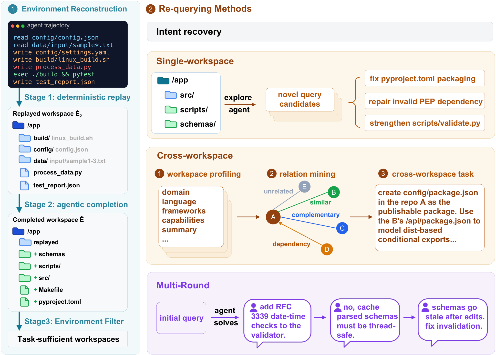

Replay the evidence
Replay recorded file operations to recover the earliest observed file states, withholding the original agent’s solution edits.
trajectory → partial workspaceQWEN × TSINGHUA UNIVERSITY / RESEARCH 2026
A trajectory records one solution.
An environment opens up a universe of tasks.
1 Qwen Team, Alibaba Group2 Tsinghua University
From recorded interactions to reusable, verifiable environments. Download video
Task-sufficient environments
Training records in the full mixture
Terminal-Bench 2.1
EvoCode-Bench v2 · MT@4
01 / THE IDEA
Agent trajectories expose the files, commands, and edits behind real work. Terminal-Universe uses that evidence to reconstruct the workspace before the solution, then completes the missing context.
The result is a reusable environment: solve the original task again, pose a new one, connect related codebases, or continue the interaction over multiple rounds. Each generated task is grounded in executable code and checked with a verifier.
Read the full abstract on arXiv02 / THE METHOD
Recover the workspace.
Scale what an agent can learn from it.
Replay recorded file operations to recover the earliest observed file states, withholding the original agent’s solution edits.
trajectory → partial workspaceA completion agent restores missing files and dependencies. A sufficiency judge retains workspaces that support the task.
partial → executable workspaceExplore recovered environments for new tasks, roll out solutions, and select training data with executable verifiers.
workspace → verified training data
Reconstruct the user’s original request and let a stronger teacher solve it in the recovered environment.
Inspect the codebase to create new, diverse tasks grounded in its actual files and capabilities.
Connect a writable target with a related, read-only reference to synthesize tasks spanning codebases.
Continue with user feedback, changing requirements, and verified recovery across a persistent session.
03 / THE RESULTS
Qwen3.5-27B, before and after supervised
fine-tuning on the 32.0k full mixture.
Average Pass@1 (%) · Terminus2-XML
MT@4 (%) · Multi-round evaluation
Reported in Table 3 of the paper. Gains are absolute percentage-point differences from the same base model.
At the same 35.8k training volume, Intent Recovery reaches 52.1% versus 36.7% for source-trajectory SFT on Terminal-Bench 2.1, averaged over Claude Code and Terminus2-XML. Recovered environments make it possible to regenerate better demonstrations.
Source: Table 4 · Intent Recovery ablation04 / CITATION
@misc{wu2026terminaluniverse,
title={Terminal-Universe: Turning Agent Trajectories into Scalable Terminal Environments},
author={Jie Wu and Zhenru Zhang and Beichen Zhang and Xuwu Wang and Yuhui Su and Mouxiang Chen and Peng Wang and Zhihai Wang and Que Shen and Hao Zhou and An Yang and Fei Huang and Yujiu Yang and Dayiheng Liu},
year={2026},
eprint={2609.04148},
archivePrefix={arXiv},
primaryClass={cs.AI},
url={https://arxiv.org/abs/2609.04148}
}